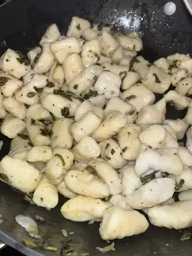

Gnocchi

Ingredients
- 2 potatoes, peeled
- 2 cups all-purpose flour
- 1 egg
Steps
- Bring a large pot of salted water to a boil, add ingredients.
- Combine 1 cup mashed potato, flour, and egg in a large bowl.
- Bring a large pot of lightly salted water to a boil. Drop in gnocchi and cook for 3 to 5 minutes.